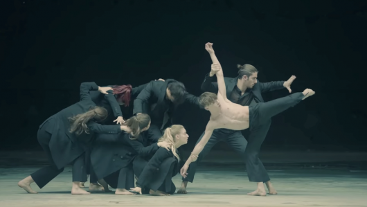

Black Swan
Concepto
"Black Swan" explora el miedo de un artista a perder la pasión por su arte. Inspirado en la frase de Martha Graham, el tema refleja la lucha interna contra la pérdida del significado en la creatividad, simbolizada por el "cisne negro".
Características principales
- 🎵 Sonido y género:
- Fusión de hip-hop, trap y música clásica.
- Uso de cuerdas melancólicas y ritmos envolventes.
- Atmósfera introspectiva y emotiva.
- ✍️ Letras y simbolismo:
- Metáforas sobre el vacío creativo y la transformación.
- Imágenes de agua, oscuridad y pérdida de control.
- Contraste entre el deseo de crear y el miedo a la indiferencia.
Galería
Letra
Video

Estética del MV
El video musical de "Black Swan" presenta una estética oscura y teatral, inspirada en el ballet y la danza contemporánea. Los siguientes elementos destacan en su estilo visual:
- 🎨 Colores: Predominan el negro y el azul oscuro, reflejando un ambiente melancólico y artístico.
- 💡 Iluminación: Uso de sombras dramáticas y contrastes fuertes para resaltar la dualidad del "cisne negro".
- 🎭 Simbolismo: La danza y los espejos representan el conflicto interno y la transformación artística.




Sobre BTS
BTS es un grupo surcoreano de fama mundial que ha redefinido el K-pop con su estilo innovador y mensajes profundos en sus canciones...